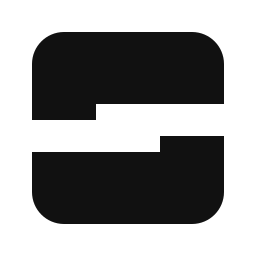

蓝色标识
浅色背景 · #5AA8E8
单色标识

打印 / 单色 / 形状检查
反白标识

深色背景
小尺寸检查
16 / 24 / 32 / 64 px
启动与应用内
记一笔
RinklNote
RinklNote
灵动滑块 / 登录标识
保留品牌蓝
#7EC1FC · 启动背景
#5AA8E8 · 浅背景标识
纯几何标识 · 蓝色识别 · 无阴影 · 无字体依赖
浅色背景 · #5AA8E8

打印 / 单色 / 形状检查

深色背景
16 / 24 / 32 / 64 px
灵动滑块 / 登录标识
#7EC1FC · 启动背景
#5AA8E8 · 浅背景标识